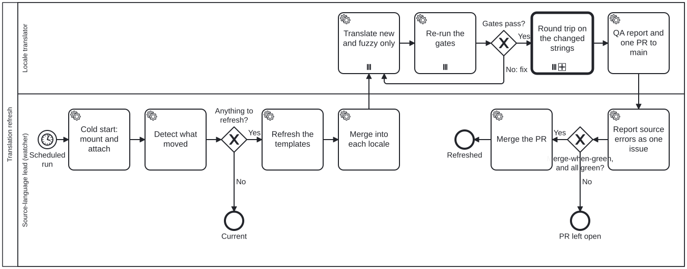

Generated from
cat-harness/library/skills/library-core/translation-refresh.md— do not edit here.
Translation refresh — the watcher
The watcher is the last step of a multi-locale translation, and it runs for as
long as the translations exist. It is a scheduled fresh session in the
translation-source-lead lane of
translation-refresh.bpmn,
which multi-locale-translation.bpmn
schedules. This page is what that session follows, cold, with nothing
remembered from the session that scheduled it.
translation-manager is the reference for every term
used here; read its §”Translating into several locales as a team” first.
Generic on purpose. Nothing here names an instance. Where a step depends
on the instance (where its pages live, which extractor writes its page
templates, how its terminology supplements are built), the instance’s own
AGENTS.md names it, and you read it there.
What wakes it
- The schedule set when the watcher was armed. A run that finds nothing to refresh ends at once, and that is the usual run.
- A template check that failed, on main or on a PR: a source change that did not refresh its templates. Run the watcher for that instance before anything else touches its catalogues.
Cold start, once per run
- Clone each instance the run covers, and follow its
AGENTS.mdcold start to lay down every pinned layer from itsindex.lock.json. In a composed checkout that is, in order: clone the mounts the lock lists,bun install --frozen-lockfile,bun run cat mount:lock,bun run cat mount:remote:check. Never mount a layer at a floating ref, and never edit a mounted layer: a fix to one is a PR to its repository. - Attach each repository the run may push to. In a hosted session that is the session’s add-repository tool, with push access. A repository the run cannot push to is reported, and the run goes on with the others.
- Note the merge policy. Each instance’s
AGENTS.md(§ Translations) declares it. The default, when nothing is declared, is open only: the run opens PRs and merges nothing. An instance may declare merge-when-green (step 9).
Per instance, in order
<root> is the instance’s directory in the checkout. Every command below
takes --instance <root>, so one checkout serves every instance.
| step | command | moves on when |
|---|---|---|
| 1. detect | translation:status --instance <root>, translation:drift:check --instance <root>, translation:obsolete:check --instance <root>, and the instance’s template checks | any shows something to do |
| 2. refresh templates | the instance’s extractors (translate-bpmn --instance <root> --extract for diagrams; pages and glossary as its AGENTS.md names) | the template checks pass |
| 3. merge into each locale | msgmerge --update --backup=none, or translation:obsolete --instance <root> | every catalogue matches its template |
| 4. translate new and fuzzy | by hand or by agent, with the locale term base | no empty or fuzzy entry is left |
| 5. gates | below | every gate passes |
| 6. round trip | translation-round-trip.bpmn on the changed strings | both drift and not-drift are recorded |
| 7. QA report | translation:page-qa --instance <root>, and the report | it is written |
| 8. one PR | one per instance, based on main and targeting main | it is open |
| 9. merge | only under merge-when-green, all green, round trip no fail | merged, or left open and reported |
| 10. source mistakes | one issue on the source | filed, or none found |
1. Detect
bun run cat translation:status --instance <root> # new, fuzzy, empty, per locale
bun run cat translation:drift:check --instance <root> # each .po against the .pot beside it
bun run cat translation:obsolete:check --instance <root> # msgids the source no longer yields
Then the instance’s template checks: translate-bpmn:check for its
diagrams, and the page and glossary template checks its AGENTS.md names.
Any of them failing, or any count above zero, is a change to refresh.
Exit 2 is not “nothing to do”. These commands exit 2 when they cannot
determine the answer, for example when an instance declares no
translation-sources directory. Report it for that instance and go on to
the next; never read it as current.
2. Refresh the templates
Re-run the instance’s extractors, once, for every locale. Diagrams:
bun run cat translate-bpmn --instance <root> --extract
Pages and glossary schemes: the extractors the instance’s AGENTS.md
names. A generator that writes below a mounted layer leaves that mount
modified; re-lay it from the lock afterwards, as the cold start says.
3. Merge into each locale
Merge each refreshed template into every locale’s catalogue:
- new strings arrive empty: they are the work of step 4;
- changed strings arrive fuzzy, with the old translation kept as a hint;
- obsolete strings are kept as
#~entries, never deleted, so the translation can be revived if the source comes back.
With gettext installed,
msgmerge --update --backup=none <locale.po> <template.pot> does all three.
Without it,
bun run cat translation:obsolete --instance <root> marks the obsolete
entries, and the instance’s AGENTS.md names how its new strings are added.
Then re-run step 1’s translation:drift:check: it fails while any catalogue
still differs from its template.
4. Translate only the new and fuzzy strings
Translate the empty and fuzzy entries in every locale, and nothing else. A
string already translated is not re-translated, even where you would have
worded it differently today. Translate with the locale term base
(translation-manager §”The locale term base”):
a term a lower layer fixes keeps its fixed form. Clear #, fuzzy only on an
entry you have actually re-translated.
FHIR terms go into the locale’s one CodeSystem supplement, never into the
resource. Translation-node manifests stay official: false,
generatedBy: "agent". Write no status.json.
A mistake in the source is not fixed here. Translate what the source says, and note the location for step 10.
5. Gates
bun run cat check:translation-officiality
bun run cat translation:catalogue:check
bun run cat translated-links:check
bun run cat kg:locale:check --instance <root>
bun run cat translation:glossary:check --instance <root> --locale <locale>
The first three read the checkout they run in and take no --instance, so
run them from the checkout that holds the instance. Then the instance’s
supplement build: the locale’s CodeSystem supplements
compile with no SUSHI error and pass their structural checks (the command is
in the instance’s AGENTS.md). Placeholders, tags and URLs are preserved:
translation:page-qa reports a lost one as translation-terms-preserved.
A gate that fails is fixed in the .po, the manifest or the supplement, and
step 5 runs again. A glossary hit on a platform term in text of another
subject area is a sense check, not a violation: read it, note it in the
report, and change nothing because of it.
6. Round trip on the changed strings
Run translation-round-trip.bpmn
on the strings this run translated, and only those. The method is in
translation-manager §”The untainted round trip,
as run”. When two separate parties cannot be dispatched, record “could not
dispatch” with the reason: it is never a pass, and the PR says so.
7. QA report
bun run cat translation:page-qa --instance <root>
writes the per-catalogue sidecars under the instance’s
test/results/translation-qa/. Beside them, write the locale’s report: the
strings refreshed, each gate’s result, the round-trip counts (sampled,
flagged, drift, not drift) with every drift ruling and its fix, the glossary
violations and sense checks, and the source mistakes found.
8. One PR per instance, to main
One branch from main, one PR to main, carrying every locale this run refreshed for that instance. Never push to a source PR’s branch, and never to a branch that has already merged. The PR body links the QA report.
9. Merge, by the instance’s policy
The policy is the instance’s to declare, in its AGENTS.md:
- open only (the default): open the PR, merge nothing, report it.
- merge-when-green: merge the run’s own refresh PR only when every check is green and the untainted round trip on the changed strings records no fail. Anything red, uncertain or failing is left open and reported to the owner; the next run looks again.
Either way the translations stay unofficial: merging is not sign-off. Never merge a PR the run did not open, and never one to a repository the owner has said only a person merges.
10. Source mistakes: one issue
Every source-text mistake the translators noted goes into one issue on the source repository, with the location and the reading the translation took. Not one per locale, and not a fix in the translation: a fix to the source is a source PR, and the next run carries it to every locale.
Never
- Never re-extract per locale. Templates are refreshed once, for every locale.
- Never re-translate a finished string, and never delete an obsolete one.
- Never write
official: true. A person makes a translation official (human-translation-workflow). - Never read exit 2 as clean. “Could not tell” is reported, every time.
Processes that run this skill
This skill has its own process: Translation refresh (watcher).

| process | step(s) that name it |
|---|---|
| Multi-locale translation | Schedule the refresh watcher |
| Translation refresh (watcher) | Cold start: mount and attach; Detect what moved; Refresh the templates; Merge into each locale; Report source errors as one issue; Merge the PR |